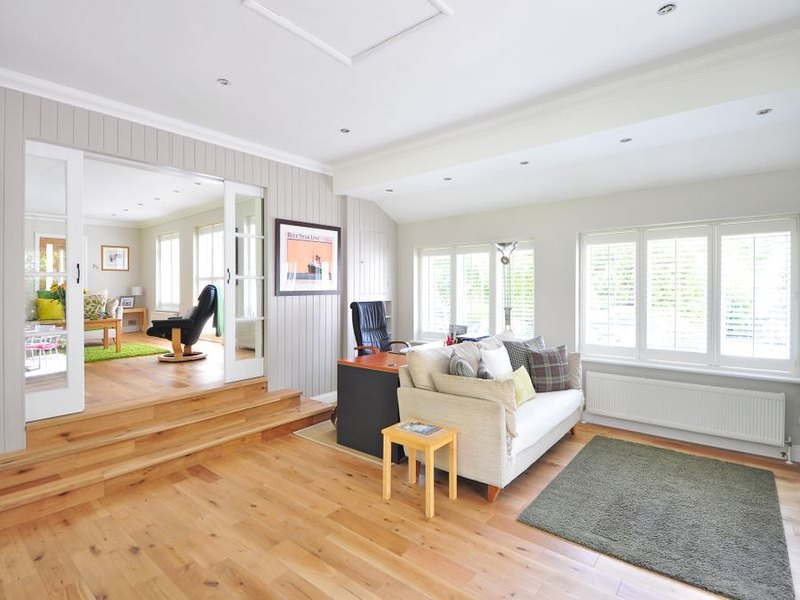

Pipe repair — before & after
Plumbing correction shown from the original problem through the finished repair.

Plumbing correction shown from the original problem through the finished repair.
This project is representative of handyman and renovation work Knight Group performs across Pinellas County. Scope, materials, and timeline are confirmed in writing before work begins.
Want similar work at your property? Book a free estimate with photos of your space.

Frequently asked questions
Do you offer pipe repair — before & after in Pinellas County?
Yes. Knight Group serves homeowners across Pinellas County with registered, insured handyman-scope work. Share photos or a short description and we will confirm fit before scheduling.
How do I get a price before work starts?
Request a free written estimate online or call (813) 649-3341. For defined small scopes we can often quote a flat rate; mixed punch lists may be hourly depending on access and materials.
Are you licensed and insured?
Knight Group Handyman Services LLC is registered and insured in Florida. We perform handyman-scope repairs and refer licensed trades when a permit or specialist is required.
How soon can you schedule?
Most standard requests schedule within one to two business days. Active leaks or urgent safety issues get priority when you call directly.
What should I prepare before your visit?
Clear access to the work area, note any prior repairs, and list parts you already purchased. Photos through the booking form help us bring the right tools on the first trip.
Ready to schedule?
Tell us what needs attention and where the property is located.